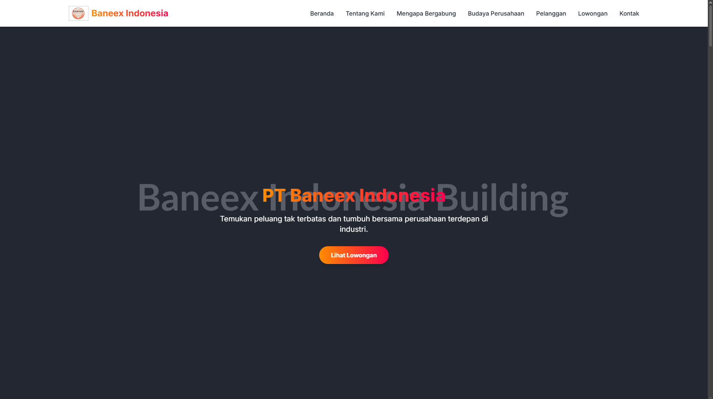
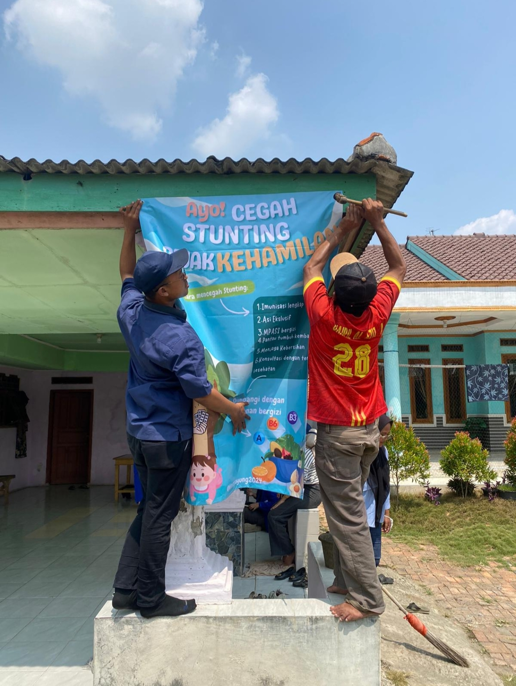

Portofolio

Pengukuran Presisi Faro CMM
Melakukan inspeksi mutu secara teliti menggunakan lengan pengukur portabel Faro CMM (20+ komponen/hari) untuk memastikan dimensi komponen sesuai standar teknis.

Analisis & Problem Solving (RCA)
Melakukan investigasi menyeluruh menggunakan metode 5 Why, Fishbone, dan 8D Report untuk menemukan akar penyebab cacat produksi dan menekan internal defect rate hingga 0,21%.

Checksheet & Baca Gambar Teknik
Keahlian membaca blueprint/gambar teknik (toleransi ±0,50 mm) secara presisi serta menyusun checksheet dan SOP inspeksi berbasis standar ISO 9001:2015.

Verifikasi Absensi Karyawan
Pengelolaan dan rekapitulasi data kehadiran harian 34 karyawan menggunakan fingerprint untuk memastikan validitas data payroll dan kedisiplinan kerja.

Rekapitulasi Surat Perintah Kerja Lembur (SPKL)
Penyusunan, verifikasi, dan pengarsipan Surat Perintah Kerja Lembur (SPKL) berbasis form secara tertib guna mendukung keakuratan lembur karyawan.

Pengembangan Website Rekrutmen Internal
Merancang dan membangun platform website rekrutmen internal guna mendigitalisasi proses pendaftaran, penyaringan kandidat, serta mempercepat alur rekrutmen tenaga kerja.

Pembuatan NIB (Nomor Induk Berusaha)
Program pendampingan dan pembuatan legalitas usaha (NIB) bagi pelaku UMKM lokal guna mendukung legalitas dan pengembangan ekonomi masyarakat.

Infografis & Publikasi Desa Cipayung
Perancangan media informasi/infografis visual dan program penyuluhan masyarakat sebagai bentuk kontribusi aktif dalam kegiatan KKN.
Tonton Video Infografis
Ketua Pelaksana KKN & Program Kesehatan
Memimpin tim KKN dalam mengkoordinasikan program sosial kemasyarakatan, termasuk kolaborasi dalam kegiatan posyandu/imunisasi anak di desa.